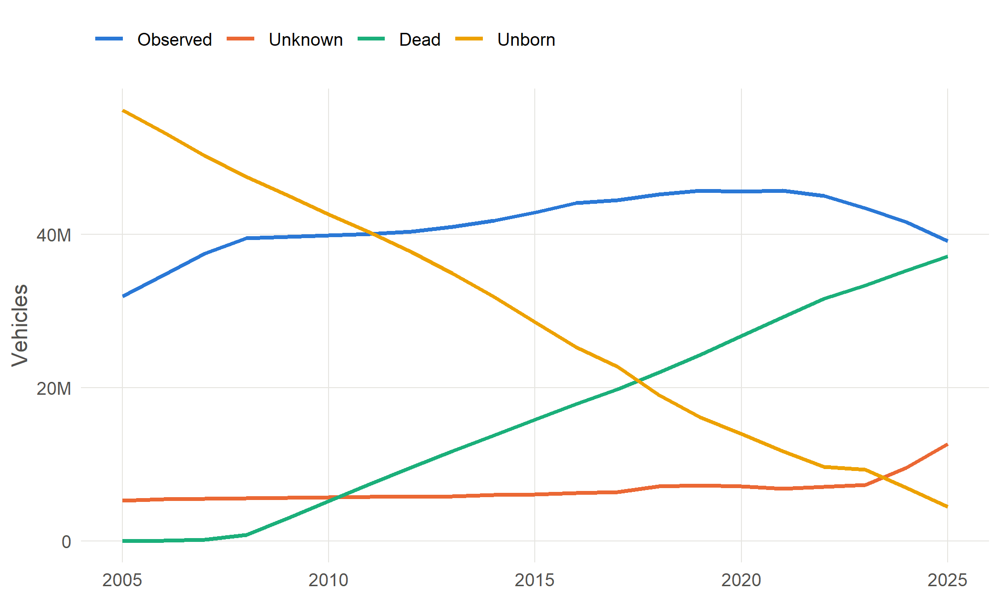

6 The life of a vehicle
The CARS data follows each vehicle through its life, year by year. To read it correctly you need to know the stages a vehicle passes through, which ones leave a trace in the data, and how the data describes the years in which a vehicle is not seen.
6.1 Stages of a vehicle’s life
A new vehicle
A new vehicle is registered with the DVLA when it is first sold, or sometimes earlier by a dealer (pre-registration), and receives its registration number. Its date of first registration is recorded by the DVLA and its first-use date by DVSA; the two are usually the same. The manufacture date can be months earlier for a vehicle that sat in stock.
For its first three years (four in Northern Ireland) a new vehicle needs no MOT. Until its first test, the MOT data knows it exists but not where it is or how far it has been driven. Once it has been tested, the annualisation fills in its early years from that first test (see below).
An imported vehicle
A used vehicle imported into the UK is registered when it arrives. It is given a plate for its age, where its age can be shown, or a Q plate where it cannot (Chapter 5). Its UK registration date can therefore be many years after it was built, which affects anything inferred from dates, such as its Euro standard (Chapter 4).
The first MOT
At three years old the vehicle has its first MOT (Chapter 1), and from then on it is observed at least once a year: its location (the postcode area of the test station) and its odometer reading. The first test also gives the first measurement of how far it has been driven: the whole distance since new.
NoteTo be written
Whether the data can identify vehicles tested before their third birthday (taxis, private hire vehicles and others), and how they appear in the mileage figures.
Off the road: SORN
A keeper who takes a vehicle off the road, and stops taxing and insuring it, must make a Statutory Off Road Notification (SORN). A SORN vehicle may not be driven or parked on a public road, and needs no MOT. A SORN lasts until the vehicle is taxed again, sold or scrapped.
A SORN vehicle therefore drops out of the MOT data, and reappears if it returns to the road. Many old vehicles stay on SORN for years, which is why DfT’s counts, which include SORN vehicles, hold more old vehicles than the MOT data (Chapter 13).
NoteTo be written
The history of SORN rules: when SORN was introduced, and the period when a SORN had to be renewed every twelve months rather than lasting indefinitely (possible sources: DVLA SORN myths, Impact assessment 2013/188).
Export
A vehicle sold abroad is marked for export and leaves the UK register. The DVLA records the marker (markedForExport_DVLA, ever_export_marked).
End of life
A vehicle at the end of its life is taken to an authorised treatment facility, which issues a certificate of destruction and tells the DVLA. A vehicle that is badly damaged may be written off by its insurer, and either scrapped or repaired and returned to the road. Some vehicles are stolen and never recovered.
6.2 How the data describes a vehicle’s life
For every year from 2005 to 2025 the vehicle table has a column pca_YYYY. Where the annualisation could place the vehicle, it holds a postcode area. Otherwise it holds one of three statuses:
| Status | Meaning |
|---|---|
a postcode area (e.g. LS) |
Observed: the vehicle is placed in this area that year |
unborn |
The vehicle had not yet been first registered (its birth year is this year or later) |
unknown |
The vehicle existed, but was not placed: for example a new vehicle that has not yet had its first MOT, or a long gap between tests |
dead |
The year is after the vehicle’s last MOT and beyond the years its postcode area is carried forward |
ImportantPitfall: observed does not mean tested that year
The annualisation gives a vehicle a postcode area in years when it was not tested:
- before its first MOT, the postcode area of the first test is copied back to the years since its first registration;
- after its last MOT, the postcode area is carried forward for about two years.
So a vehicle is observed from its first registration, once it has been tested, until about two years after its last test. A vehicle scrapped soon after its last MOT therefore stays observed for about two more years. The pipeline’s quality/pca_observation_by_year.csv counts, for each year, the observed vehicles that were past their last MOT or under three.
NoteTo be confirmed
The exact rules for copying the postcode area back from the first test and forward from the last, from the linkage stage.
Every vehicle is in exactly one status each year, so the four lines in Figure 6.1 always add up to the same total: every vehicle in the table. The observed line peaks before the end of the series and then falls. That fall is not a shrinking fleet. Vehicles first registered in the last three years mostly have not had a first MOT yet, so they are unknown, and the last year, 2025, is incomplete.
ImportantPitfall: dead means no longer tested, not scrapped
A vehicle is dead in every year after its last MOT, whatever the reason: scrapped, exported, declared SORN, exempt as a historic vehicle, or simply driven illegally without a test. The data cannot tell these apart. A vehicle that comes back from SORN after a gap is unknown in the gap, not dead, because the status is set from the date of its last test.
ImportantPitfall: the recent years look like vehicles are vanishing
A vehicle tested for the last time in 2023 might be dead, or might simply be late for its test. Near the end of the series the data cannot yet tell, so a vehicle last seen in either of the final two years is usually left unknown rather than dead. Treat counts of vehicles leaving the fleet in the last two or three years with care.
6.3 Within-year flags from the annualisation
The annualisation (Chapter 8) also sets, for each year, flags describing where the vehicle was in its life on 1 July, the straddle date used to assign each year:
is_new_vehicle: in its first-use period, before its first MOT;is_intertest: between two MOT tests, with a test either side of 1 July that are no more than two years apart;is_end_use: in its last period, after its final MOT.
The flags are blank before the vehicle is born, more than a year after its last test, and when the tests either side of 1 July are more than two years apart. Take a vehicle first used in September 2007 whose first test on record is in 2013, with later tests in 2014, 2016, 2018 and every year from 2020. It went six years without a test, and there are gaps of 26 months (2016 to 2018: too long, so is_intertest is blank) and 23 months (2018 to 2020: under two years, so is_intertest is TRUE).
Mileage is still shared out across every year between two tests, however long the gap. The flags describe the evidence, not whether a mileage exists.
The CARS pipeline uses these flags to find each vehicle’s last MOT year (and so when it becomes dead), and then drops them from the published vehicle table.
NoteTo be written
Confirm the exact definitions of the three flags, and whether they should be published.